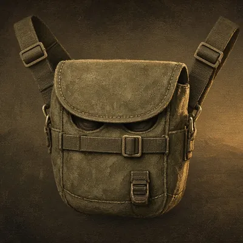
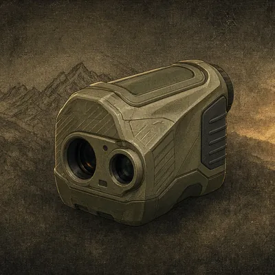
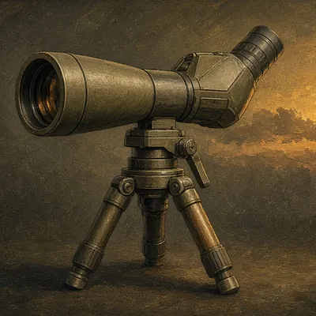
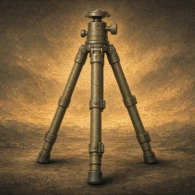
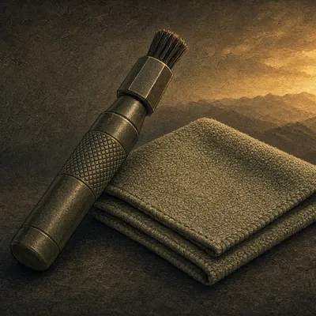
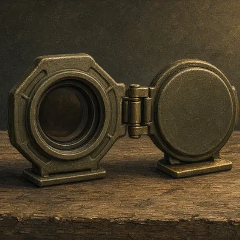

Optics
Binoculars, spotting scopes, rangefinders and the mounts that hold them steady.
Disclosure: We may earn a commission from links on this site, at no extra cost to you. As an Amazon Associate I earn from qualifying purchases. Links open each store's own search. We never show prices, ratings or reviews, so check details on the retailer's site. Shop top-rated → opens the store's search sorted by customer rating. Details
🔭 Optics
 Category
CategoryHunting binoculars
8x or 10x with a 42mm objective is a common all-round choice. Try them in low light if you can; that is when you need them most.

CategoryBinocular harness
Keeps glass on your chest, out of the rain and off your neck. Quiet closures matter in a stand.

CategoryLaser rangefinder
Check the rated range on deer-sized targets, not just reflective ones, and whether it has angle compensation for steep shots.

CategorySpotting scope
For western glassing at long distance. Angled eyepieces are easier to use from a sitting position on a tripod.

CategoryGlassing tripod
A steady tripod plus a binocular adapter lets you glass far longer before your eyes tire.

CategoryLens cleaning kit
A lens pen and microfiber cloth. Never wipe grit off glass with your shirt.

CategoryScope covers
Flip-up covers keep rain and snow off your scope lenses until the moment you need them.
Read before you buy
Playing the Wind for Whitetail: A Practical Field Guide
GuideThe First-Time Elk Hunt Checklist
GuideMoon Phase and Feeding Times: How to Use Them (Honestly)
GuidePublic Land Hunting Basics: Finding, Scouting and Hunting It
GuidePlanning Your First Plains-Game Safari
GuideRangefinding and Shot Distance Basics
Other departments
Clothing & Boots · Tree Stands & Blinds · Calls & Decoys · Scent Control · Archery · Firearm Accessories · Game Processing · Camp & Lodging Gear · Safety · Electronics & Trail Cams · Dog Gear
Item images are illustrations, not the exact products sold.